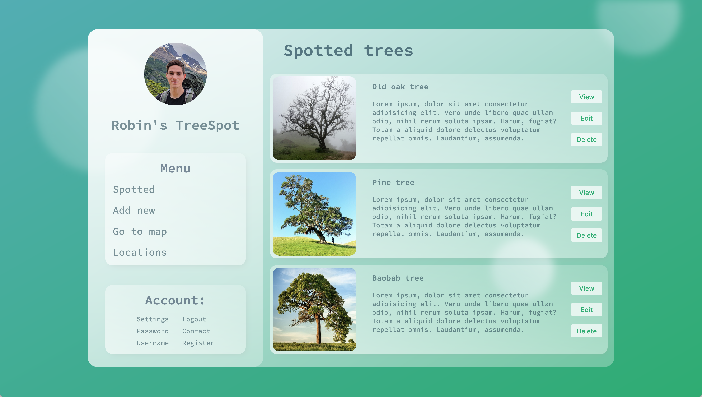

This page will show a few design experiments. All these are made as an exercise to practise my design skills. They may be heavily inspired by other peoples tutorials. Links will be provided at the bottom. Please give them a visit if you liked the work.
